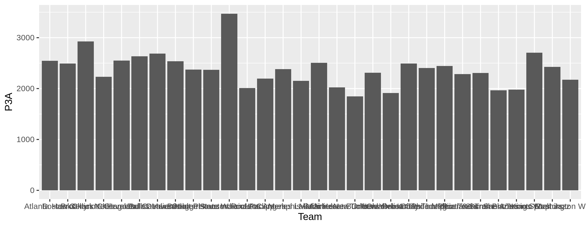
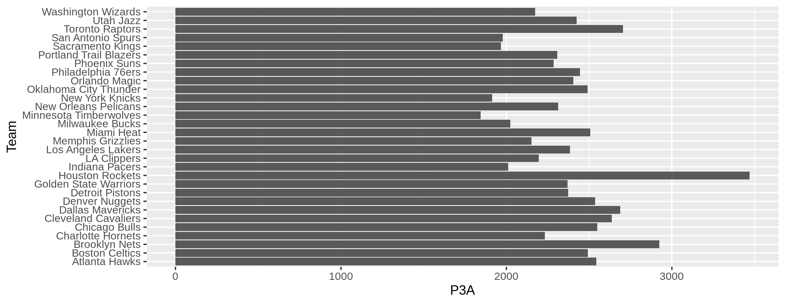
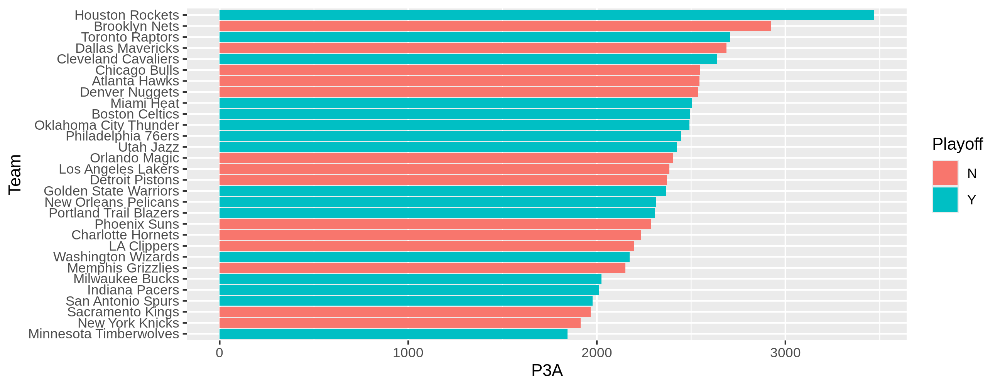
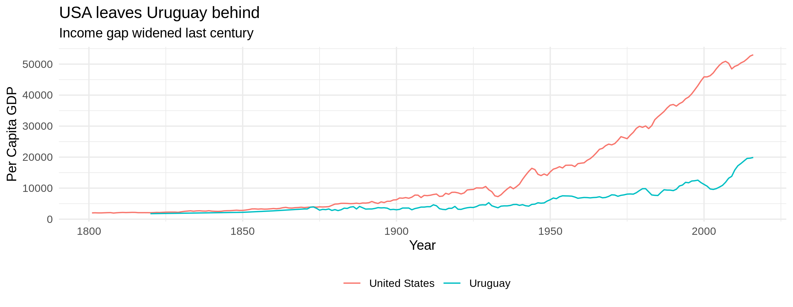
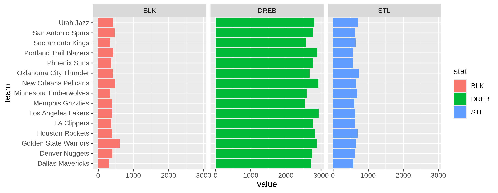

[1] "data.frame"Session 6
2023-11-22
Types
R has different types of objects.
Data Frames
- Data frames are special type of object composed of multiple objects.
Rows: 234
Columns: 11
$ manufacturer <chr> "audi", "audi", "audi", "audi", "audi", "audi", "audi", "…
$ model <chr> "a4", "a4", "a4", "a4", "a4", "a4", "a4", "a4 quattro", "…
$ displ <dbl> 1.8, 1.8, 2.0, 2.0, 2.8, 2.8, 3.1, 1.8, 1.8, 2.0, 2.0, 2.…
$ year <int> 1999, 1999, 2008, 2008, 1999, 1999, 2008, 1999, 1999, 200…
$ cyl <int> 4, 4, 4, 4, 6, 6, 6, 4, 4, 4, 4, 6, 6, 6, 6, 6, 6, 8, 8, …
$ trans <chr> "auto(l5)", "manual(m5)", "manual(m6)", "auto(av)", "auto…
$ drv <chr> "f", "f", "f", "f", "f", "f", "f", "4", "4", "4", "4", "4…
$ cty <int> 18, 21, 20, 21, 16, 18, 18, 18, 16, 20, 19, 15, 17, 17, 1…
$ hwy <int> 29, 29, 31, 30, 26, 26, 27, 26, 25, 28, 27, 25, 25, 25, 2…
$ fl <chr> "p", "p", "p", "p", "p", "p", "p", "p", "p", "p", "p", "p…
$ class <chr> "compact", "compact", "compact", "compact", "compact", "c…The Manufacturer column
A new type
- Factors are used to represent categorical variables
Rows: 234
Columns: 11
$ manufacturer <fct> audi, audi, audi, audi, audi, audi, audi, audi, audi, aud…
$ model <chr> "a4", "a4", "a4", "a4", "a4", "a4", "a4", "a4 quattro", "…
$ displ <dbl> 1.8, 1.8, 2.0, 2.0, 2.8, 2.8, 3.1, 1.8, 1.8, 2.0, 2.0, 2.…
$ year <int> 1999, 1999, 2008, 2008, 1999, 1999, 2008, 1999, 1999, 200…
$ cyl <int> 4, 4, 4, 4, 6, 6, 6, 4, 4, 4, 4, 6, 6, 6, 6, 6, 6, 8, 8, …
$ trans <chr> "auto(l5)", "manual(m5)", "manual(m6)", "auto(av)", "auto…
$ drv <chr> "f", "f", "f", "f", "f", "f", "f", "4", "4", "4", "4", "4…
$ cty <int> 18, 21, 20, 21, 16, 18, 18, 18, 16, 20, 19, 15, 17, 17, 1…
$ hwy <int> 29, 29, 31, 30, 26, 26, 27, 26, 25, 28, 27, 25, 25, 25, 2…
$ fl <chr> "p", "p", "p", "p", "p", "p", "p", "p", "p", "p", "p", "p…
$ class <chr> "compact", "compact", "compact", "compact", "compact", "c…Class of the vector
Factors
- Behind the scenes, each category of a factor is assigned to a numeric value.
- The levels
[1] "audi" "chevrolet" "dodge" "ford" "honda"
[6] "hyundai" "jeep" "land rover" "lincoln" "mercury"
[11] "nissan" "pontiac" "subaru" "toyota" "volkswagen"- In this case, audi is 1, chevrolet 2, etc.
- The order of the levels is this codification.
- It is separate from the order in which the data frame is arranged.
Forcats
This package has functions to change the order of a factor. Think carefully about what you want.
fct_inorder(): by the order in which they first appear.In this case, the alphabetical order is the same as the order in which they appear in the data. This might not be true.
fct_infreq
fct_infreq(): by number of observations with each level (largest first)
Example
- In the NBA data,
Team,Playoff,ConferenceandDivisionare factors.
Rows: 30
Columns: 28
$ Team <chr> "Atlanta Hawks", "Boston Celtics", "Brooklyn Nets", "Charlo…
$ Playoff <fct> N, Y, N, N, N, Y, N, N, N, Y, Y, Y, N, N, N, Y, Y, Y, Y, N,…
$ GP <int> 82, 82, 82, 82, 82, 82, 82, 82, 82, 82, 82, 82, 82, 82, 82,…
$ MIN <int> 3941, 3961, 3971, 3956, 3971, 3946, 3961, 3976, 3961, 3946,…
$ PTS <int> 8475, 8529, 8741, 8874, 8440, 9091, 8390, 9020, 8509, 9304,…
$ W <int> 24, 55, 28, 36, 27, 50, 24, 46, 39, 58, 65, 48, 42, 35, 22,…
$ L <int> 58, 27, 54, 46, 55, 32, 58, 36, 43, 24, 17, 34, 40, 47, 60,…
$ P2M <int> 2213, 2202, 2095, 2373, 2264, 2330, 2161, 2398, 2322, 2583,…
$ P2A <int> 4471, 4483, 4190, 4873, 4736, 4314, 4354, 4566, 4756, 4611,…
$ P2p <dbl> 49.49676, 49.11889, 50.00000, 48.69690, 47.80405, 54.01020,…
$ P3M <int> 917, 939, 1041, 824, 906, 981, 967, 940, 886, 926, 1256, 74…
$ P3A <int> 2544, 2492, 2924, 2233, 2549, 2636, 2688, 2536, 2373, 2369,…
$ P3p <dbl> 36.04560, 37.68058, 35.60192, 36.90103, 35.54335, 37.21548,…
$ FTM <int> 1298, 1308, 1428, 1656, 1194, 1488, 1167, 1404, 1207, 1360,…
$ FTA <int> 1654, 1697, 1850, 2216, 1574, 1909, 1530, 1830, 1621, 1668,…
$ FTp <dbl> 78.47642, 77.07720, 77.18919, 74.72924, 75.85769, 77.94657,…
$ OREB <int> 743, 767, 792, 827, 790, 694, 666, 902, 830, 691, 739, 788,…
$ DREB <int> 2693, 2878, 2852, 2901, 2873, 2761, 2717, 2748, 2756, 2877,…
$ AST <int> 1946, 1842, 1941, 1770, 1923, 1916, 1858, 2059, 1868, 2402,…
$ TOV <int> 1276, 1149, 1245, 1041, 1147, 1126, 1007, 1227, 1103, 1265,…
$ STL <int> 638, 604, 512, 559, 626, 582, 578, 627, 628, 655, 699, 721,…
$ BLK <int> 348, 373, 390, 373, 289, 312, 310, 404, 317, 612, 392, 340,…
$ PF <int> 1606, 1618, 1688, 1409, 1571, 1524, 1578, 1533, 1508, 1607,…
$ PM <int> -447, 294, -307, 21, -577, 77, -249, 121, -12, 490, 695, 11…
$ team <fct> ATL, BOS, BKN, CHA, CHI, CLE, DAL, DEN, DET, GSW, HOU, IND,…
$ Conference <fct> E, E, E, E, E, E, W, W, E, W, W, E, W, W, W, E, E, W, W, E,…
$ Division <fct> Southeast, Atlantic, Atlantic, Southeast, Central, Central,…
$ Rank <int> 15, 2, 12, 10, 13, 4, 13, 9, 9, 2, 1, 5, 10, 11, 14, 6, 7, …Visualization
- Create a barchart of the number of 3 Pts attempts for the season. Add color to the bars to show if each team made the playoffs.

Example (2)
Flipping coordinates is useful to show the labels of the Teams.

Order the factor
fct_reorderReorders the factor by another variable.

Function arguments and defaults
- You can pass arguments with or without names to functions

Time series plots
df <- read_excel('./mpd2018.xlsx', sheet = 'Full data')
df_uy_usa <- df %>%
filter(country %in% c("Uruguay", "United States"))
plt <- df_uy_usa %>%
filter(year>1800) %>%
ggplot(aes(year, cgdppc)) +
geom_line(aes(group=country, color=country)) +
scale_color_discrete("") +
labs(title="USA leaves Uruguay behind",
subtitle="Income gap widened last century",
x="Year",
y="Per Capita GDP") +
theme_minimal() +
theme(legend.position = "bottom")
Facets
- Facets allow us to see different subsets of our data in different panes.
Facets
Facets in ggplot
- If we add a facetting layer to our ggplot, we get one pane for each subset of our facetting variable.
Rows: 360
Columns: 4
$ team <chr> "Dallas Mavericks", "Dallas Mavericks", "Dallas Mavericks", "Dal…
$ conf <fct> W, W, W, W, W, W, W, W, W, W, W, W, W, W, W, W, W, W, W, W, W, W…
$ stat <chr> "GP", "MIN", "PTS", "W", "L", "P2M", "P2A", "P2p", "P3M", "P3A",…
$ value <dbl> 82.00000, 3961.00000, 8390.00000, 24.00000, 58.00000, 2161.00000…Facets
